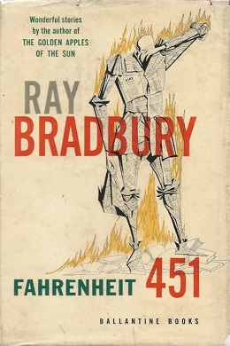

"Brilliant...Startling and ingenios...Mr.Bradbury's account of this insane world, which bears many alarming resemblances to our own, is fascinating. -The New York Times"
Guy Montag is a fireman. In his world, where television rules and literature is on the brink of extinction, firemen start fires rather than put them out. His job is to destroy the most illegal of commodities, the printed book, along with the houses in which they are hidden. Montag never questions the destruction and ruin his actions produce, returning each day to his bland life and wife, Mildred, who spends all day with her television "family." But then he meets an eccentric young neighbor, Clarisse, who introduces him to a past where people didn't live in fear and to a present where one sees the world through the ideas in books instead of the mindless chatter of television. When Mildred attempts suicide and Clarisse suddenly disappears, Montag begins to question everything he has ever known. He starts hiding books in his home, and when his pilfering is discovered, the fireman has to run for his life.